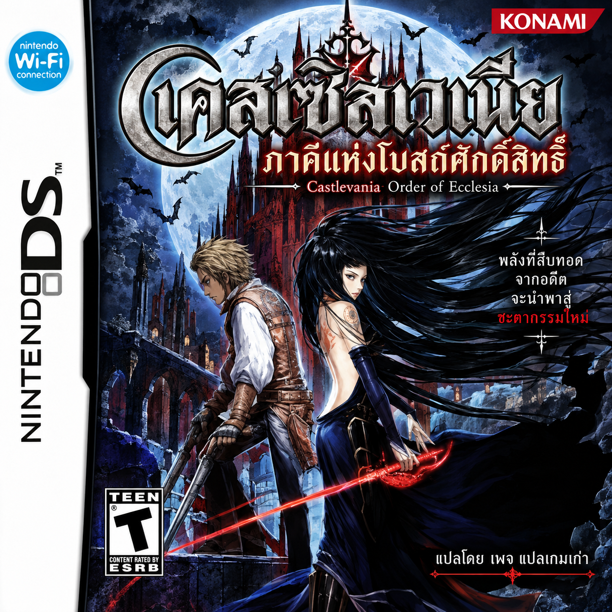

Castlevania: Order of Ecclesia
Nintendo DS · ภาษาไทย v1.6.6 · JAP / JP
ภาพปกโดยเพจแปลเกมเก่า
ภาคีแห่งโบสถ์ศักดิ์สิทธิ์ ฉบับภาษาไทย v1.6.6
โดยเพจแปลเกมเก่า
ใช้ ROM อะไร?
ชื่อไฟล์เปลี่ยนได้ ระบบตรวจเนื้อไฟล์ด้วย SHA-256 ไม่รองรับ USA, EUR หรือ ROM ที่แปลไทยแล้ว
ใช้ Akumajou Dracula - Ubawareta Kokuin (Japan) ต้นฉบับที่ยังไม่ดัดแปลงเท่านั้น
- ภูมิภาค Japan (JAP / JP)
- รหัสเกม YR9J
- ขนาด 67,108,864 ไบต์ (64 MiB)
- ไฟล์ .nds — หากอยู่ใน ZIP ให้แตกไฟล์ก่อน
ชื่อไฟล์เปลี่ยนได้ ระบบตรวจเนื้อไฟล์ด้วย SHA-256 ไม่รองรับ USA, EUR หรือ ROM ที่แปลไทยแล้ว
ปรับปรุงใน v1.6.6
- ลดขนาดชื่อแผนที่ไทยให้มีสัดส่วนใกล้ชื่อญี่ปุ่นต้นฉบับ
- ลดความหนาเส้นขอบและจัดชื่อให้อยู่กึ่งกลางกรอบ
- คงตัวย่อค่าสถานะอังกฤษและการแก้บทสนทนาจากรุ่นก่อน
- เลือก ROM ญี่ปุ่นต้นฉบับของคุณ
- กด “สร้าง ROM ภาษาไทย v1.6.6” และรอตรวจสอบ
- กดดาวน์โหลดไฟล์ .nds ภาษาไทย แล้วเปิดในอีมูเลเตอร์
ไฟล์ ROM ประมวลผลบนอุปกรณ์ของคุณ ไม่ถูกอัปโหลดขึ้นเว็บ
กำลังโหลดแพตช์…
ดาวน์โหลด ROM ภาษาไทย v1.6.6สถานะการตรวจสอบ
ตรวจข้อความหลัก 1,922 รายการ คืนโครงสร้างบทสนทนาที่ว่าง 223 รายการ และตรวจผลลัพธ์แพตช์ตรงกับ ROM รุ่นนี้ทุกไบต์ ยังรอผลทดสอบบนเครื่องจริงสำหรับรุ่นนี้
ตรวจข้อความหลัก 1,922 รายการ คืนโครงสร้างบทสนทนาที่ว่าง 223 รายการ และตรวจผลลัพธ์แพตช์ตรงกับ ROM รุ่นนี้ทุกไบต์ ยังรอผลทดสอบบนเครื่องจริงสำหรับรุ่นนี้
ดาวน์โหลดเฉพาะแพตช์ BPS · แพตช์พร้อมคู่มือ ZIP
ไฟล์ดาวน์โหลดแพตช์ไม่มี ROM รวมอยู่ด้วย
ค่า SHA-256 สำหรับตรวจสอบ ROM
ต้นฉบับ Japan502d672335abbef1ef1ef181c606c59fcb9fcaec05159ac15c88aa72c191a283
ไฟล์ภาษาไทย v1.6.66cdf371a6a57cdb181ee13bb1dba8ff26d4fa8a0593eb22be3718ecbcdbad341